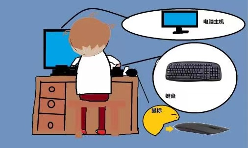

白白
PCI（Peripheral Component Interconnect），考虑到你英语水平，我再解释下：Peripheral 是外围设备，Component是组件，Interconnect是相互连接的意思。
白白
符合PCI标准的，都是PCI设备。显卡、网卡、声卡、硬盘、键鼠等都是PCI设备。PCI标准是人家英特尔（Intel）公司1991年推出的。我也是1991年出生的。

白白
lspci
root@nano:~# lspci
00:02.0 PCI bridge: NVIDIA Corporation Device 0faf (rev a1)
01:00.0 Ethernet controller: Realtek Semiconductor Co., Ltd. RTL8111/8168/8411 PCI Express Gigabit Ethernet Controller (rev 15)
root@nano:~#
可以看到有两个PCI设备。00:02.0和01:00.0。00:02.0是nvidia公司的设备，一般是显卡。01:00.0是Realtek的Ethernet网卡。
明明
00:02.0和01:00.0，这两个编号是什么意思？
白白
你的问题挺多。格式是[总线:插槽.编号]，"00:02.0" 表示PCI总线上第0个插槽的第2个功能，"01:00.0" 表示PCI总线上第1个插槽的第0个功能。
你去拔下来，换个插孔插上，就能明白了。